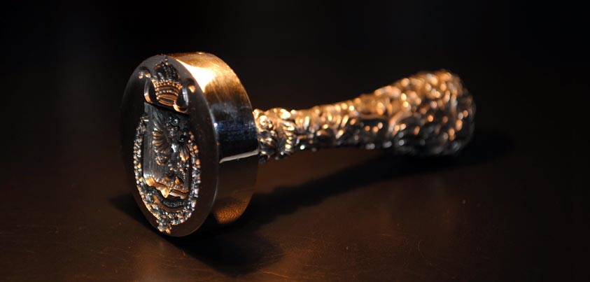
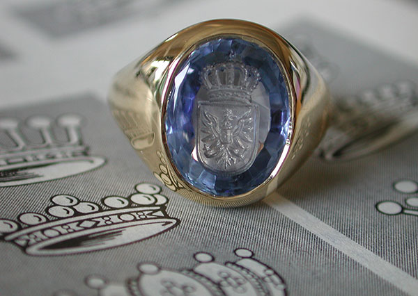
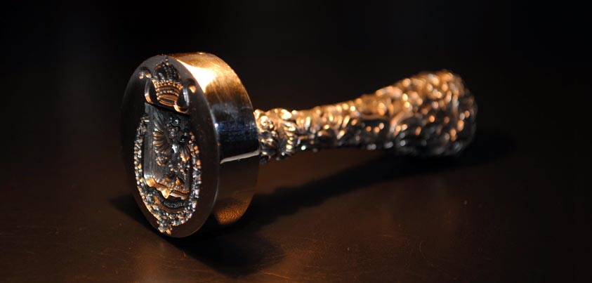
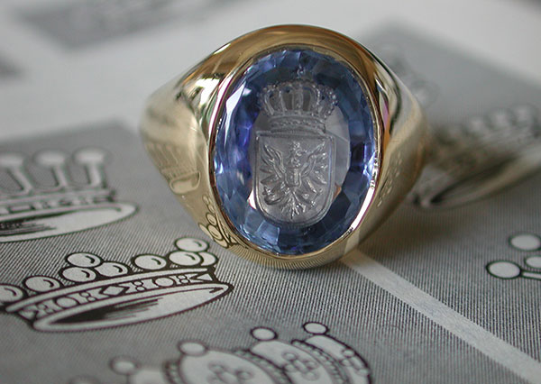

Pečatný prsteň je produkt, ktorý si vyžaduje najviac trpezlivosti pri hľadaní firmy / klenotníka/, ktorá by to dokázala zrealizovať. Na Slovensku sa mi nepodarilo nájsť nikoho, kto by bol ochotný vyrobiť pečatný prsteň. V zahraničí sú klenotnici, ktorí sa špecializujú aj na výrobu pečatných prsteňov. Pečatne prstene s rodinným erbom ktoré vidíte sú zlate a ich cena sa pohybuje od 10 000 Euro a viac. Záleží od použitého zlata a kameňov.

 


